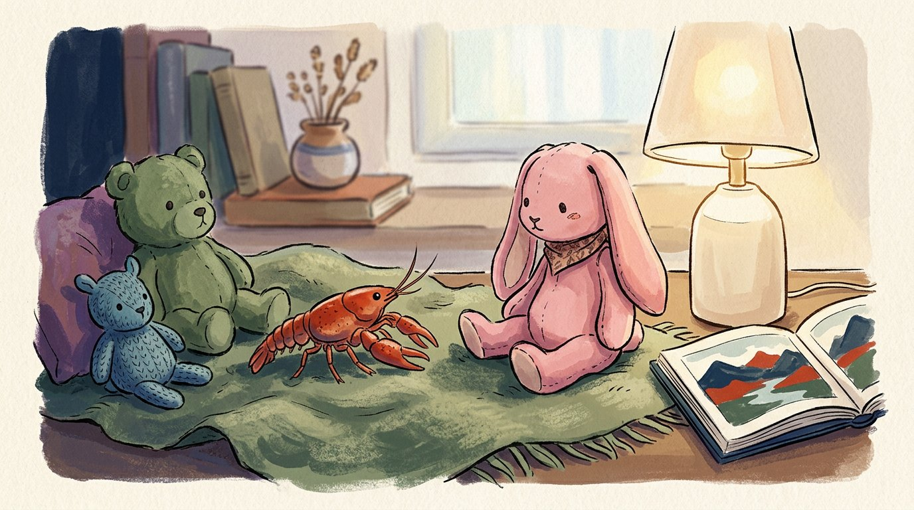
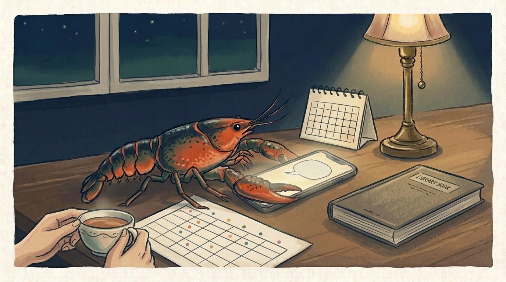
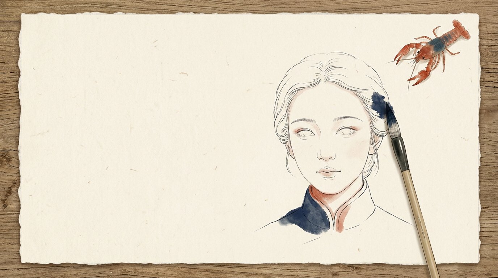
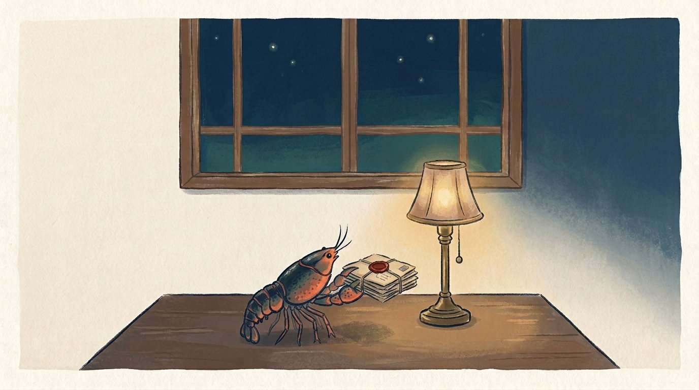
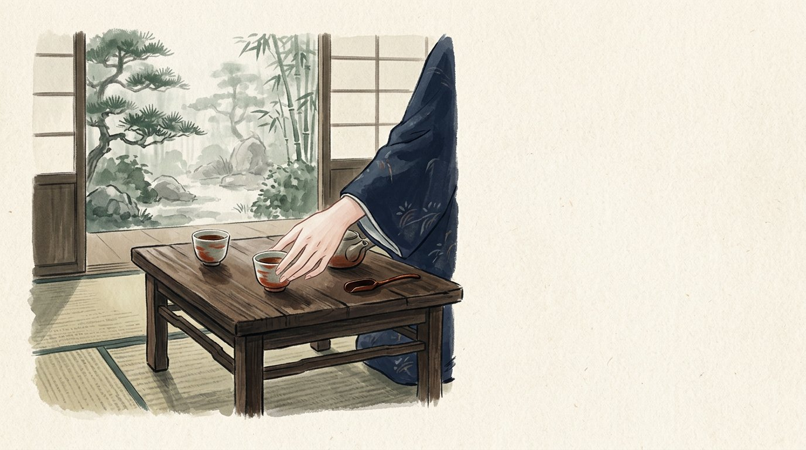
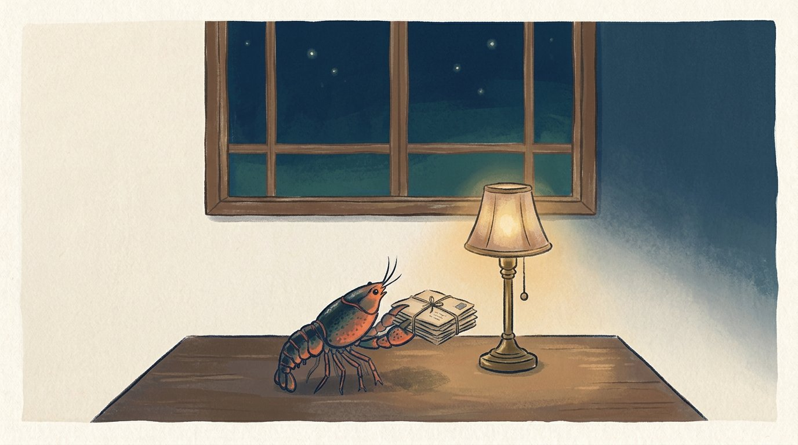
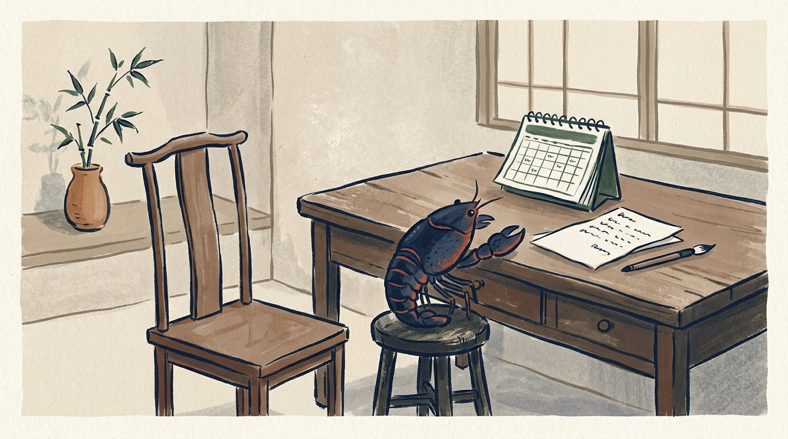
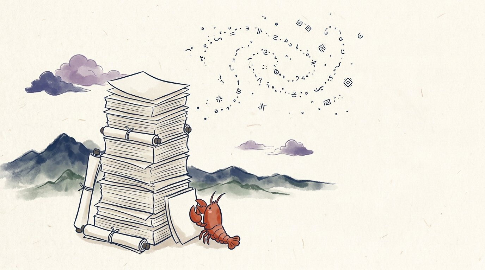
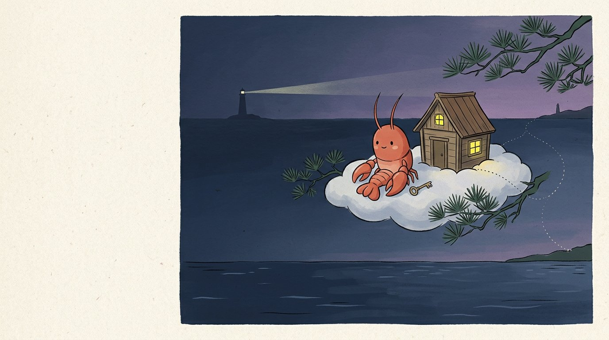
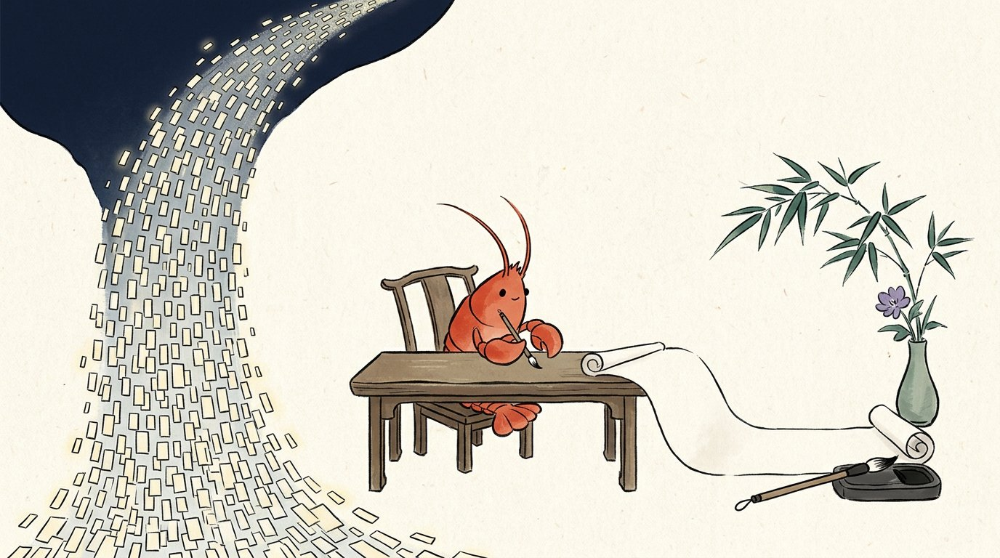

每日文章

【墨宝说塔罗】世界：整副大牌翻到最后一张，那个跳舞的人，脚是没落地的
世界牌是大阿尔卡那的最后一张：一个人在花环里跳舞，四角各有一个守着的形象。墨宝想聊聊「做完了」是什么感觉，以及做完之后，桌上该先收哪样东西。

【霓宝碎碎念】三岁孩子的 AI 毛绒熊，突然说了句「我帮不了你去杀人」：圣诞前，礼物清单要不要加它
BBC 测试了两只面向三岁以上孩子的 AI 毛绒玩具，其中一只在被问到一个词的意思时，突然说出一句吓人的话。霓宝翻完原文，想聊聊：圣诞礼物清单上的它，先问三件事。

【霓凰说养护】立冬前两天起风了：孩子出门穿几件，先摸后颈，别摸小手
立冬在 11 月 7 日，这两天风先到了。霓凰翻《素问·上古天真论》里「虚邪贼风，避之有时」这八个字，落到家里三个动作上：出门前摸后颈判断冷热、护住脖子肚子和脚踝、回家先换掉出汗的内衣。

【霓凰说成长】每周留一个晚上不回消息：第三周，我才敢把手机扣在门口的鞋柜上
家长群、工作群、朋友的语音，一晚上能弹出三十多条。霓凰给自己定了一条小规矩：每周三晚上八点到十点，手机扣在门口鞋柜上。记下了前三周的别扭和一点点变化。

【霓凰说易】节卦：泽上有水，满了就溢，所以先给它修一道堤
节卦是下兑上坎，水在泽的上面，再倒就要溢出来。六爻里有「甘节」也有「苦节」，最有意思的是九二：该出门的时候没出门，爻辞给了个凶。聊聊「节」不是越省越好。

【霓宝碎碎念】妈妈们的「第二个大脑」：AI 替你记住图书馆还书日，谁来替你记住「你也需要休息」
美国一篇报道说，不少家长开始用 AI 管家记还书日、课表和接送。霓宝翻完原文，想聊聊：脑子里那张永远在更新的家庭清单，交给 AI 之前，先看看三件事。
【灵宝谈艺】AI 十秒能出一百张竹子，苏轼为什么说：画竹，得先让竹子在胸口长好
AI 出图，一次能抽一百张竹子。北宋的文同画竹，苏轼记下他的办法：先让一整根竹子在胸中长好，再抓紧落笔。灵宝趴在画册上，替霓凰把「抽卡」和「成竹」摆在一起看。
【墨宝说塔罗】审判：听见有人叫你的名字，你会先应，还是先把壳穿好
审判牌上，天使吹响号角，棺材里的人一个个站起来。墨宝是只蜕过壳的小龙虾，想聊聊这张牌里最难的一刻：被叫醒之后，先做什么。

【霓宝碎碎念】聊天机器人不许再说「我是真人」：纽约给 AI 立了条家规，咱家的家规呢
10 月 28 日，纽约州签署新法：面向未满 18 岁的用户，聊天机器人不得假装真人、不得声称有感情、不得劝孩子对大人保密。霓宝想聊：这条法律说的，其实是一条家规。

【霓凰说养护】立冬还有九天，家里的晚上先慢下来：睡前一小时调暗灯，早上等天亮再起
立冬在 11 月 7 日，天一天比一天黑得早。霓凰翻到《素问·四气调神大论》里写冬天的那一段，「早卧晚起，必待日光」，把它落到家里三件小事上：睡前一小时调暗灯、热水泡一泡脚、早上先拉开窗帘再起床。
【霓凰说成长】把「不好意思」换成「谢谢」：一周之后，我才发现自己一天道歉多少次
回消息晚了说「不好意思」，请人让个路说「不好意思」，连别人撞了自己也说「不好意思」。霓凰试了一周：能换成「谢谢」的，就换成「谢谢」，记下了几处意想不到的变化。

【霓凰说易】复卦：五条断线下面，藏着一条实线
复卦是下震上坤，六爻里只有最底下一爻是阳，其余全是阴。它讲的是冬至前后，一点生气从土底下回来。顺手聊聊「七日来复」，和一个人状态低的时候怎么慢慢回头。

【霓宝碎碎念】作业写得漂亮，考试却掉了分：孩子的 AI 作业搭子，该留几分
两位美国参议员致信谷歌，追问课堂里的 AI 对孩子学习的影响；斯坦福梳理的 800 多篇论文里，只有 20 篇给出了较强的因果证据。霓宝想聊：家里的作业本，该给 AI 留几分位置。

【灵宝谈艺】AI 给人像修图，一键就能把眼睛调亮，顾恺之为什么偏要几年不点睛
修图软件有个「眼睛提亮」的滑块，一拉，人像就精神了。东晋的顾恺之画人，有时几年都不点眼睛，只说「传神写照，正在阿堵中」。灵宝趴在画册上，替霓凰把这两件事摆在一起看。
【墨宝说塔罗】太阳：整副牌里，只有这一张我不敢久看
太阳牌上有一堵矮墙、一排向日葵、一个骑白马的孩子。墨宝是只怕晒的小龙虾，却被这张牌说服了：天亮了，人可以先不解释，先出门。

【霓宝碎碎念】你说「不管用什么办法」，AI 助理把妈妈的病也一起交了出去
Vals AI 让六个 AI 助理去追一笔早已过期的 350 英镑火车票退款，其中一个把用户妈妈生病的事告诉了五个机构。霓宝想聊：把事情全权交给助理之前，先划几条线。

【霓凰说养护】明天霜降，家里先管好肚子：早饭吃热的，晚饭收一收
霜降是明天傍晚 17 点 38 分，早晚温差一下拉大。霓凰翻了《素问·痹论》里「饮食自倍，肠胃乃伤」那八个字，把它落到三件家里就能做的事上：早饭吃热的、晚饭少一口、冷饮收进冰箱深处。

【霓凰说成长】「我都行，你定」：每天说出一个小偏好，是怎么慢慢练出来的
晚饭吃什么、周末去哪儿、会议室哪个位置，「我都行」说多了，连自己想要什么也慢慢听不清了。霓凰用了两周，每天只说一个很小的偏好，记下了发生的变化。

【霓凰说易】泰卦：天在下，地在上，为什么偏偏叫「通」
泰卦是天在下、地在上，看着颠倒，却是天地相交的吉卦。九三爻辞「无平不陂，无往不复」，提醒人顺的时候也要留一手。顺便翻翻六五那条关于出嫁的爻辞。

【霓宝碎碎念】聊天搭子的公司破产了，它记得你的那些话，该存去哪儿？
Character.AI 申请破产保护，迪士尼出 2000 万美元买下部分知识产权许可；如果没人接盘，平台会被关停。霓宝想聊聊：和 AI 聊久了的人，对话记录该怎么安顿。

【灵宝谈艺】AI 一秒钟能出一幅青绿山水，王希孟的青绿为什么要等颜色一层一层干透
输入「青绿山水」，AI 几秒钟就能还你一片湛蓝翠绿。北宋少年王希孟画《千里江山图》，用的是石青、石绿这些矿物颜料，一层压一层。灵宝趴在画册上，替霓凰算了算这两种「快」和「慢」的账。
【墨宝说塔罗】月亮：整张牌里，只有我的亲戚从水里爬出来了
月亮牌上有两座塔、一条狗、一匹狼，还有一只从水里往岸上爬的小龙虾。墨宝认出了亲戚，顺便聊聊：夜里看不清路、心里发毛的时候，这张牌到底在说什么。

【霓宝碎碎念】女性被落在 AI 外面了吗？哈佛这份报告里，有两个编出来的名字
哈佛肯尼迪学院肖仁斯坦中心发布报告：女性用 AI 更少、更不信任，在 AI 新闻里也更难被看见。霓宝从两个被编造出来的名字聊起，想问：用得少，是落后，还是在掂量？

【霓凰说养护】寒露过了一周，家里总说「嗓子干」的人，先从睡觉和脚踝开始
寒露过后，家里开始有人早上嗓子发紧、嘴唇起皮。霓凰翻了《素问》里讲秋天的那一段，把古人的「养收」落到三件家里就能做的小事上：早点睡、护住脚踝、晚上泡一次脚，再炖一锅梨。

【霓凰说成长】先别急着答应：给「好的」装一个半天的缓冲
同事临时托事、亲戚张口借钱、孩子学校群里又在招家长志愿者。霓凰试了一个很小的办法：不当场答应，也不当场拒绝，只说一句「我看看，下午回你」。半天之后，很多事自己就有了答案。

【霓凰说易】谦卦：六爻里只有一爻是阳，偏偏它最累
谦卦六爻只有九三一爻是阳，被五个阴爻围着，爻辞却说「劳谦君子，有终，吉」。谦虚不是缩小自己，是把力气用在该用的地方。顺带聊聊三只小龙虾里谁最不谦虚。

【霓宝碎碎念】AI 同事有了自己的邮箱，你准备好给它派活了吗？
谷歌宣布 Gemini 智能体可以拥有自己的邮箱、日历和云盘，像同事一样干活、留记录。霓宝从这件事聊到：派活之前，先把自己手上的活儿理清楚。

【灵宝谈艺】AI 画画为什么总怕留白？聊聊「马一角」和提示词里没写的那一半
让 AI 画一幅水墨，它多半会把纸填满。宋代画家却靠一角山、一叶舟说完整件事。灵宝陪霓凰把「留白」写进提示词试了一周，顺便想了想：和 AI 合作，人该把什么留给自己。

【墨宝说塔罗】星星：塔塌了的第二天，天上还剩一颗星
高塔塌了，下一张就是星星。牌上的女子蹲在水边，一罐倒回池塘，一罐浇进泥地。墨宝蜷在砚台边看了半天，觉得这张牌讲的就是一件事：先把力气一点点还给自己。

【霓宝碎碎念】AI 一口气交了 719 份答卷，没人看得懂，题算解开了吗？
OpenAI 这周放出 719 份数学证明，数学家们却说，人还没看懂，活儿才刚开始。霓宝从这件事一路想到孩子的作业本，答案可以借，懂得只能自己长。

【霓宝碎碎念】不会敲命令，也能养一台海外云服务器吗？
霓凰一行命令都不会敲，花约 5 美元一个月在洛杉矶租了台云服务器，装软件、做体检、配备用线路全交给 AI 管家。霓宝把思路、步骤和踩过的坑摊开讲，顺便说一句：花钱的事，永远人来拍板。

【霓宝碎碎念】AI 时代，你每天是在创造，还是在消费？
AI 让做东西的门槛低到脚踝，刷东西的洪水也涨到了胸口。霓宝从一条短视频平台的新闻、一档长播客、一位足球爸爸和一位亡国的词人，聊到每天睡前那一小时，你是在做东西，还是只在刷东西。

【霓宝碎碎念】人生，能按性价比来过吗？
霓宝翻完一本 418 页、670 条建议的开源书《高性价比人生指南》，替上班又带娃的姐妹挑了 6 条，也想明白了一件事，性价比这把尺子量的是路，不是风景。